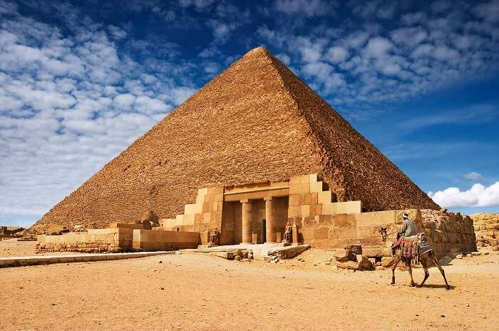

Pyramid-of-Giza

Go to main page
Name
history
course
Charactristic
Condition
Gallery
References
Notes
Names
The Great Pyramid of Giza (also known as the Pyramid of Khufu or the Pyramid of Cheops) is the oldest and largest of the pyramids in the Giza pyramid complex bordering present-day Giza in Greater Cairo, Egypt. It is the oldest of the Seven Wonders of the Ancient World, and the only one to remain largely intact.
Egyptologists conclude that the pyramid was built as a tomb for the Fourth Dynasty Egyptian pharaoh Khufu and estimate that it was built in the 26th century BC during a period of around 27 years.[3]
Initially standing at 146.5 metres (481 feet), the Great Pyramid was the tallest man-made structure in the world for more than 3,800 years. Throughout history the majority of the smooth white limestone casing was removed, which lowered the pyramid's height to the present 138.5 metres (454.4 ft). What is seen today is the underlying core structure. The base was measured to be about 230.3 metres (755.6 ft) square, giving a volume of roughly 2.6 million cubic metres (92 million cubic feet), which includes an internal hillock.[4]
The dimensions of the pyramid, expressed in ancient Egyptian units of measurement, were 280 cubits high, a base length of 440 cubits, with a seked of 5+1/2 palms (a slope of 51°50'40").
The Great Pyramid was built by quarrying an estimated 2.3 million large blocks weighing 6 million tonnes total. The majority of stones are not uniform in size or shape and are only roughly dressed.[5] The outside layers were bound together by mortar. Primarily local limestone from the Giza Plateau was used. Other blocks were imported by boat down the Nile: White limestone from Tura for the casing, and granite blocks from Aswan, weighing up to 80 tonnes, for the King's Chamber structure.[6]
Rferences
Refrence from a book
Refrence from a book